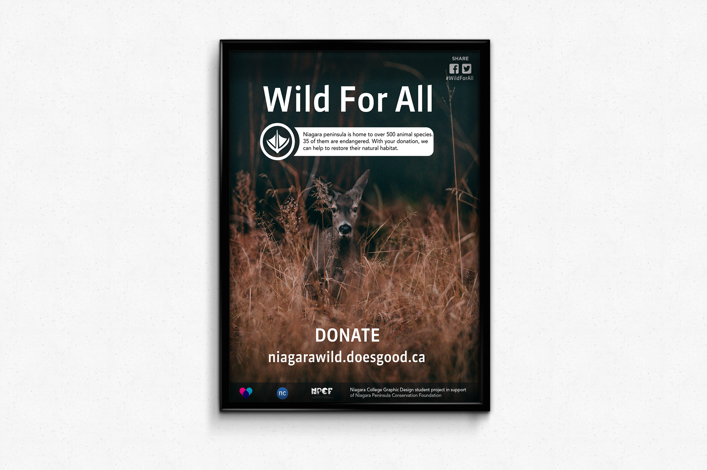

Project Objective
Similarly to Niagara Go Green, Wild for All is an initiative to encourage animal lovers donate to Niagara Peninsula Conservation Foundation (NPCF). This task however, required me to design an informative poster with a quick fact about local fauna rather than a complete campaign.
Concept
The concept is simple but effective, the poster shows the most essential elements of the fundraising event: a link to the official website, the sponsor's logos and information about Niagara wildlife.
Outcome
The composition and dark colour scheme create an interesting visual contrast that quickly makes the viewer focus on the text, which is the poster's objective.